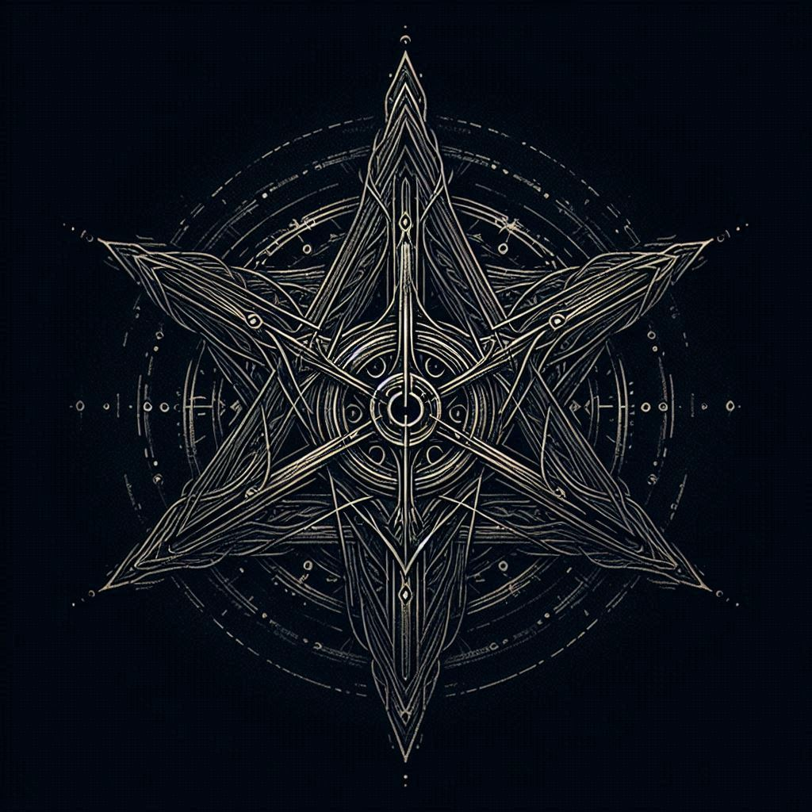

Grimorio del Abismo
Zahl'Ruun — La Voz Que Devora
el abismo nos espera y no observa

Nota: Este grimorio contiene conocimiento ancestral...
- Sha-vel’tahr-zunn — "Yo veo el fuego del abismo"
- Zahl’kaarn-oth’lim — "Fragmento del consumido por el abismo"
- Thyr’venn-xhul — "La sombra es silencio"
- Vel’zor-bhoz — "Revelar el vacío que devora"
✦ LIBRO I: DEL JURAMENTO, EL VACÍO Y SUS HIJOS
☥
Llama Abismal
Invoca el fuego del vacío
Sombra Eterna
Convoca la oscuridad primordial
Vacío Devorador
Abre un portal al abismo

Comunicación con el Abismo
⟁ Reglas del Canal Astral ⟁
- Habla solo en susurros del vacío
- No reveles tu verdadero nombre
- Usa los símbolos sagrados apropiados
- No invoques espectros sin autorización
- Mantén el respeto a los Lociam
🕯️
👁️
🌑
⟁
✧
☥
🔮
⚰️